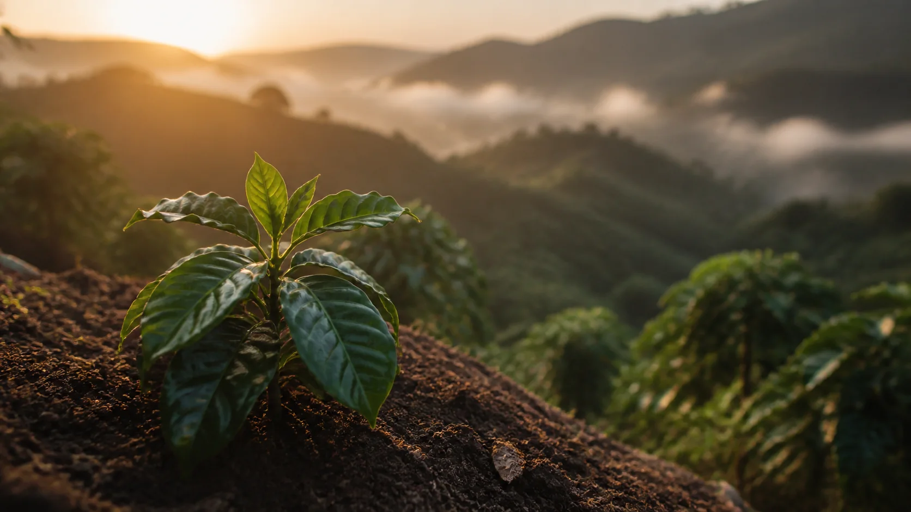
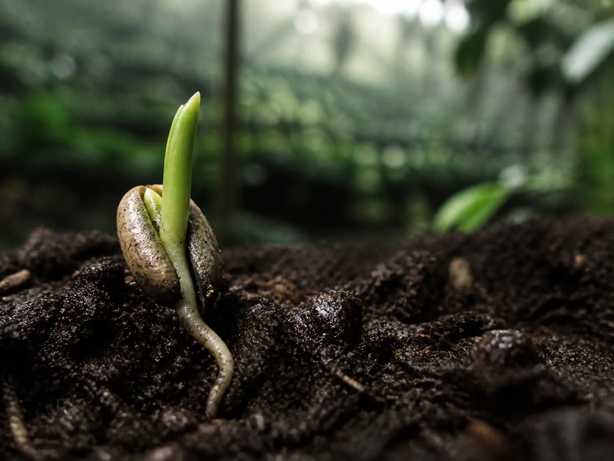
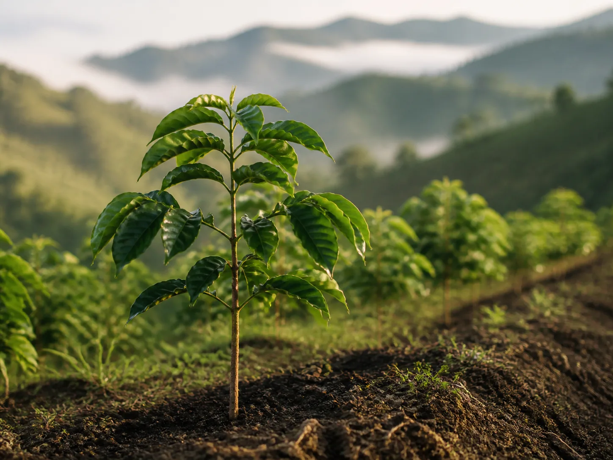
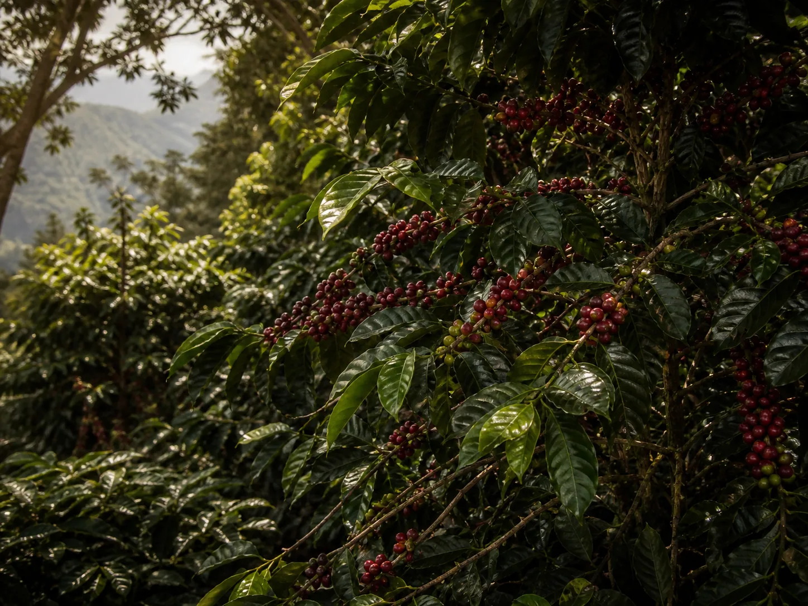
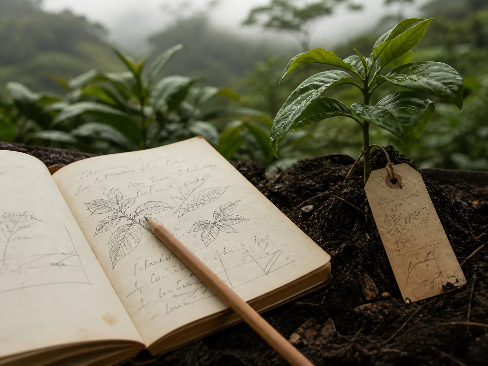
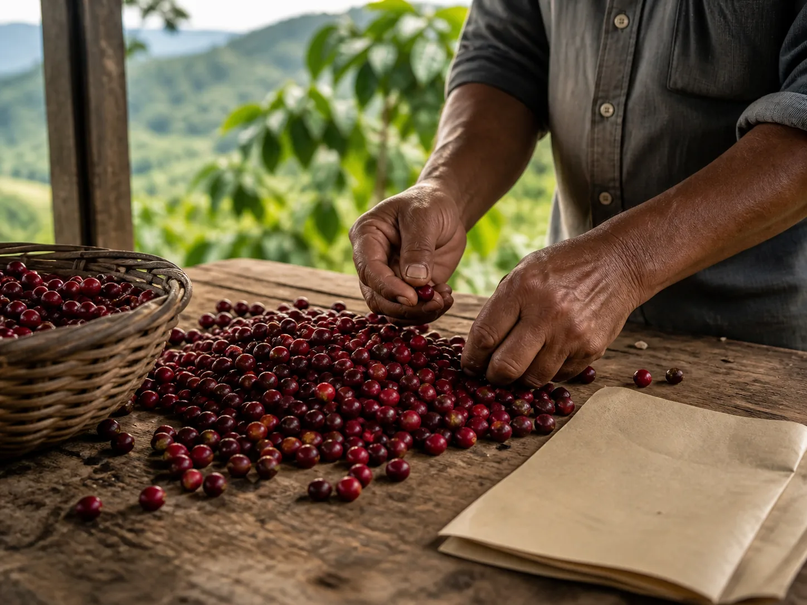
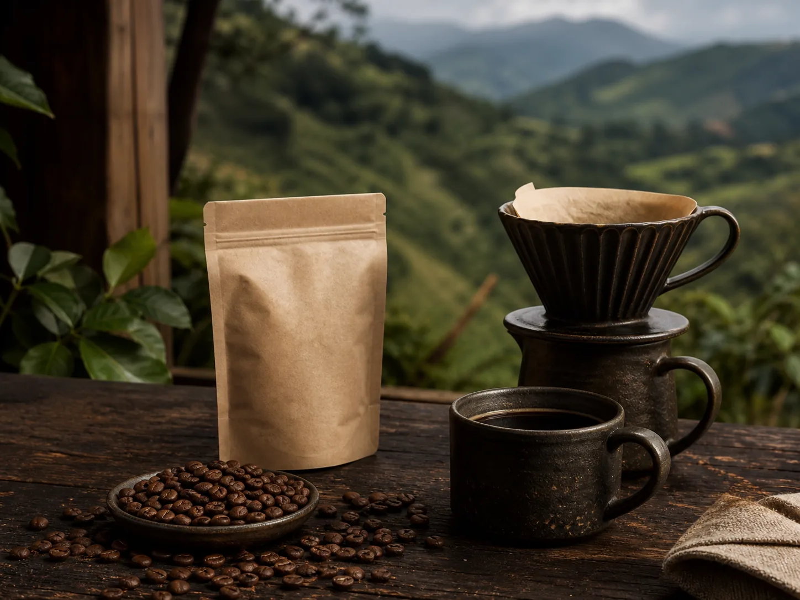
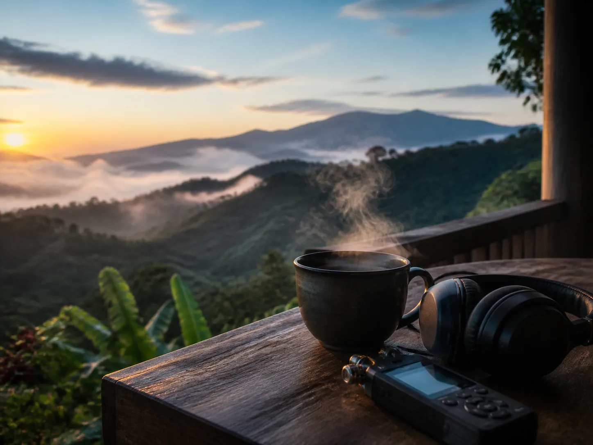

ADOPTA · FINCA TRES ESQUINAS
Un árbol también guarda memoria.
Adoptar un árbol es acompañar un ciclo: tierra, lluvia, flor, cereza y una taza que conserva el origen.
Conoce el ciclo
01 / ELIGE TU VÍNCULO
Una forma de estar cerca del origen.
Cada vínculo es una manera simbólica de acompañar el tiempo del café. Esta propuesta aún no representa una adopción comercial activa.
-

01Semilla
El comienzo: una intención puesta en la tierra.
-

02Árbol joven
Un ciclo que empieza a encontrar su propia sombra.
-

03Árbol guardián
Una presencia que acompaña la memoria del lote.
02 / EL CICLO DEL ÁRBOL
Del silencio de la semilla a tu taza.
Etapa 1 de 5
03 / TERRITORIO
El origen se cuida también al nombrarlo.
Finca Tres Esquinas vive en el Eje Cafetero. Su presencia aquí es editorial y aproximada: no publicamos coordenadas, linderos ni datos sensibles.
Finca Tres Esquinas · ubicación editorial aproximada
UBICACIÓN APROXIMADA · QUINDÍO, COLOMBIA
04 / LO QUE ACOMPAÑA EL CICLO
Memorias para volver al origen.
PROPUESTA EDITORIAL
-

01Bitácora del ciclo
Registros visuales y notas del crecimiento a lo largo del tiempo.
-

02Carta del origen
Un mensaje editorial nacido en la finca para acompañar la memoria del árbol.
-

03Café del lote
Una referencia de la cosecha vinculada al territorio, cuando el proyecto la defina.
-

04Ritual de escucha
Una pieza sonora para volver al origen desde cualquier lugar.
Estos elementos son parte de la propuesta editorial y quedan sujetos a definición conjunta con el cliente.
No adoptas un objeto: acompañas un ciclo.
Volver al origenMockup editorial · pendiente de validación con José.